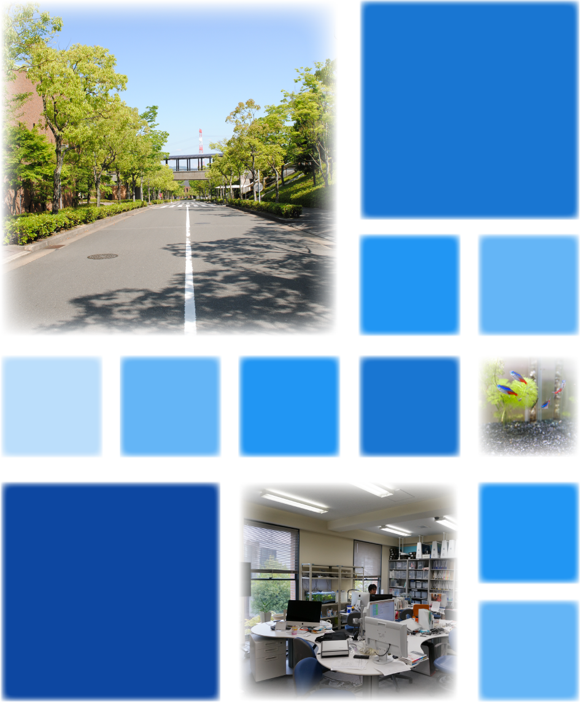

研究室について
社会情報学とは、情報の相互作用、情報が媒介するモノ・コトの相互作用を、関係性のネットワークが生成・成長・発達・分裂・崩壊するプロセスとして捉え、理解し、活用を考える学問分野です。システムを関係性として捉える考え方は、分子・遺伝子・細胞といった微細なレベルから組織・経済・社会といった人間集団系までに適用することができます。それらは情報を集め、編集し、ある機能を実現し、表現する、優れた情報処理のしくみを共有しています。
社会情報学研究室では、モノ・コト・情報の相互作用、すなわち、モノとモノ、コトとコト、情報と情報、あるいは、モノとコト、コトと情報などの「関係性をいかにデザインするか」を研究します。関係性とは、お互いが影響を与え合う「相互作用」と時間・空間にわたる「つながり」の両方を含む概念です。この関係性には、情報環境的なもの、社会の制度や経済のしくみ、文化や宗教、価値観など、目に見えないものも含まれます。私たち人間は他との関係性を求めそこに意味を見いだす存在です。独立した個という存在である以上に、いろいろな関係性のなかに生き／生かされている存在と捉えることもできます。
